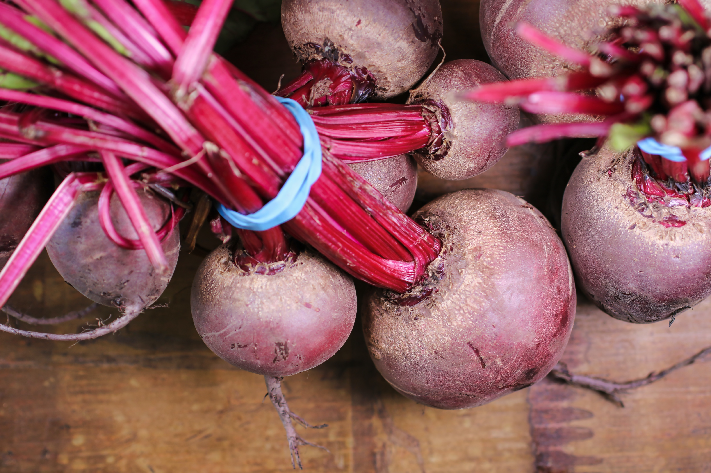

Beetroot (Beets)

Beetroots are a nutrient-rich vegetable known for their pre-workout capabilities. They contain natural nitrates that convert to nitric oxide, improving blood flow and enhancing exercise performance. Yes you read right, beets can be used as a natural pre-workout! Beetroots are also a good source of fiber, vitamins (such as vitamin C and folate), minerals (like potassium and manganese), antioxidants, and betaine. These nutrients support digestion, immune function, energy production, and overall health. Incorporating beetroots into your diet, whether raw, cooked, or in juice form, can provide these benefits and help optimize your workouts. As with any dietary changes, it's advisable to consult a healthcare professional for personalized guidance.